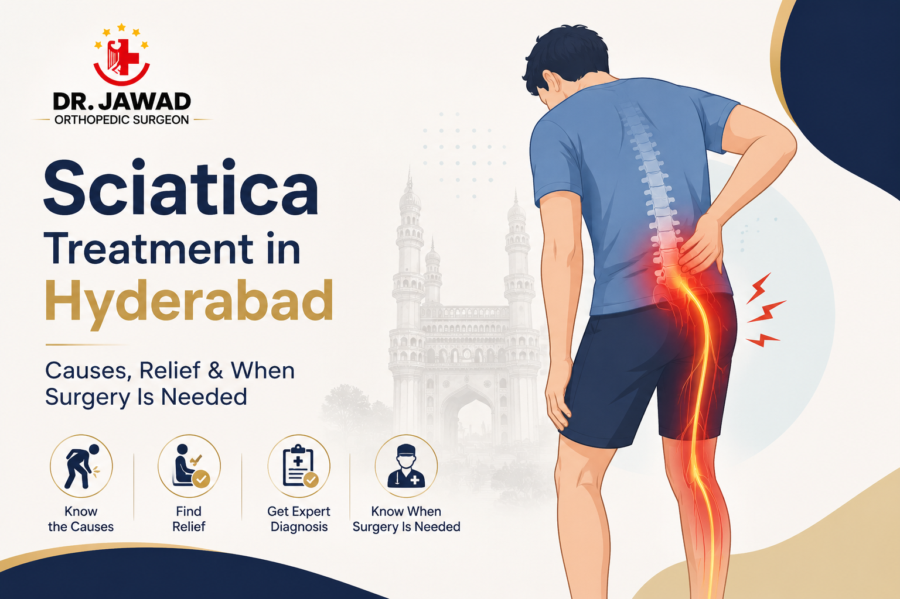

Medically Reviewed by
DR. MIR JAWAD ZAR KHANMBBS, MS - Orthopedic
M.CH-(Ortho) Joint
Replacement surgeon
Sciatica Treatment in Hyderabad: Causes, Relief and When Surgery Is Needed
Sciatica is a distinctive and often distressing type of pain that travels from the lower back down through the buttock and leg, sometimes all the way to the foot. It can make sitting, standing and walking difficult, and it worries many people who fear it means surgery. The reassuring reality is that most sciatica improves with non-surgical treatment. This guide explains what causes sciatica, how it is treated step by step, and the smaller number of situations where surgery becomes the right choice.
What Is Sciatica?
Sciatica is not a condition in itself but a symptom. It describes pain along the path of the sciatic nerve, the longest nerve in the body, which runs from the lower back through the hips and buttocks and down each leg. When this nerve is compressed or irritated, it produces the characteristic radiating pain, often with tingling, numbness or weakness in the affected leg.
Sciatica is usually felt on one side of the body. Understanding that it is a symptom matters, because effective treatment depends on finding and addressing whatever is pressing on the nerve.
What Causes Sciatica?
Several spine problems can compress the sciatic nerve and trigger sciatica:
- A herniated or slipped disc in the lower back, the most common cause.
- Spinal stenosis, a narrowing of the spinal canal that presses on the nerves.
- Age-related wear of the spine, including spondylosis.
- Spondylolisthesis, where one vertebra slips over another.
- Muscle tightness in the buttock that irritates the nerve.
Because the causes differ, a proper diagnosis is the first step. Distinguishing sciatica from its underlying cause is something we cover in detail in our guide on telling sciatica from a slip disc.
Non-Surgical Sciatica Treatment
Most sciatica settles with conservative treatment, often within weeks. The main non-surgical options include:
Physiotherapy and Targeted Exercise
Specific exercises relieve pressure on the nerve, strengthen the muscles supporting the spine and improve flexibility. This is the foundation of sciatica recovery.
Medication
Anti-inflammatory medicines and pain relievers help control pain and inflammation during a flare-up.
Activity Modification and Posture
Adjusting how you sit, stand and lift, along with avoiding prolonged sitting, reduces strain on the lower back and the nerve.
Pain Management Procedures
For persistent pain, targeted procedures can reduce inflammation around the nerve and provide relief without surgery.
When Is Surgery Needed for Sciatica?
Surgery is considered only for the smaller number of cases where non-surgical treatment has not helped after a reasonable period, where pain is severe and persistent, or where there is significant nerve compression causing weakness. When surgery is needed, it is often minimally invasive, such as a microdiscectomy to remove the portion of a disc pressing on the nerve, with a relatively quick recovery.
One situation needs urgent care: if sciatica comes with loss of bladder or bowel control or numbness around the groin, it should be treated as an emergency. This is rare but signals serious nerve compression that must be relieved quickly.
Getting the Right Sciatica Care in Hyderabad
The key to treating sciatica well is an accurate diagnosis followed by a step-by-step approach that starts conservatively. Most people never need surgery, and trying to push through severe or radiating leg pain, or masking it with painkillers for months, usually slows recovery. A specialist evaluation identifies exactly what is compressing the nerve and gets treatment started while it is still simple.
How Long Does Sciatica Last?
In many cases, sciatica improves within a few weeks with appropriate conservative treatment. Some episodes settle sooner, while others take longer, particularly if the underlying cause is not addressed.
What matters most is not rushing back into the activities that triggered it and following a proper rehabilitation plan. Persistent sciatica that lasts beyond several weeks, or that keeps returning, is a clear signal to have the underlying cause properly evaluated rather than simply managing the pain each time.
Self-Care and Preventing Sciatica
Alongside medical treatment, simple habits help both recovery and prevention. Staying gently active rather than resting completely, maintaining good posture, taking regular breaks from sitting, and using correct technique when lifting all protect the lower back.
Strengthening the core and back muscles gives the spine better support, which reduces the chance of the nerve being compressed again in future. Maintaining a healthy weight further lowers the strain on the lower back.
Frequently Asked Questions
Does sciatica go away on its own?
Many cases of sciatica improve within weeks with conservative care such as physiotherapy and activity changes. Persistent or severe sciatica should be evaluated by a specialist.
Is walking good for sciatica?
Gentle movement, including walking, is usually better than complete rest, as it keeps the spine mobile. Your specialist or physiotherapist can guide how much activity is right for your stage of recovery.
When is sciatica an emergency?
Loss of bladder or bowel control, or numbness around the groin alongside back and leg pain, is a medical emergency and needs immediate attention.
Can sciatica be treated without surgery?
Yes. The great majority of sciatica improves with non-surgical treatment. Surgery is reserved for severe, persistent cases or significant nerve compression.
Conclusion
Sciatica is the radiating leg pain that results when the sciatic nerve is compressed, most often by a slip disc or other spine problem. The great majority of cases improve with non-surgical treatment such as physiotherapy, medication and activity changes, and surgery is reserved for severe or persistent cases. Because sciatica is a symptom of an underlying cause, an accurate diagnosis is what makes treatment effective.
Book a Sciatica Consultation in Hyderabad
If sciatica or radiating leg pain is affecting your life, Dr. Jawad at Germanten Hospitals, Attapur, offers expert diagnosis and mostly non-surgical treatment. Call 9989635555 to book a consultation.
Call 9989635555

DR. MIR JAWAD ZAR KHAN
MBBS, MS - Orthopedic, M.CH-(Ortho) Joint Replacement Surgeon
As the visionary Chairman and Managing Director of Germanten Hospitals, Hyderabad, Dr. Mir Jawad Zar Khan brings over two decades of surgical leadership to the field. He is dedicated to transforming lives through evidence-based treatments, advanced robotic technology, and a commitment to patient quality of life.